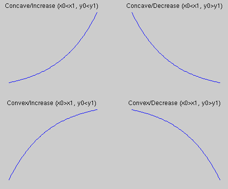

Mapping Actors
Mapping Actors are a class of actors that map the range of values taken on by message arguments for
a particular parameter, from some existing range to a new desired range for the parameter. All
Mapping Actors share a common mechanism for mapping message arguments and for sending the messages
with mapped arguments. Message arguments to be mapped are preceded by the @ character. When
a message is passed through a Mapping Actor, values preceded by @ are transformed according
to the actor's particular map specification. The map specification itself depends on the particular
kind of Mapping Actor used.
Data arrays are mappable, by preceding the array open-bracket with @,
e.g. @[*0, *1, *2].
(Exception: the HidimMapper maps entire arrays, but not individual elements.
(Exception to the exception: the HidimMapper will map only the first part
of an array, if the array passed to it has more elements than were
specified in its SetDims command. This lets you pass extra unmapped
arguments to a message group.))
Individual elements inside an array are mappable, too: [*0, *@1, @*2] for example.
Note to developers: Other actors may also make use of Mapping Actors by accessing the public member
functions:
// float-to-float mapping
float map(float datum);
and
// in-place mapping of all floats in an array
void mapArray(float * dataArray, int arrayLength);
Currently there are four types of Mapping Actors: LinearMapper,
ExponentialMapper, SegmentMapper, and HidimMapper. The LinearMapper
uses a straightforward scale-and-offset map. The ExponentialMapper uses
concave or convex exponential mapping. The
SegmentMapper uses a piecewise-linear functional map, allowing for
approximation of more general functions. Messages for each type of
Mapping Actor are described below. In each case, the default mapping is
an identity map; i.e. the mapped parameter value equals the original
parameter value.
The HidimMapper is somewhat different from the first three. It takes as input a (short) array
of values and replaces it with a (longer) array of values, typically to be immediately sent to
another message group as in
AddMessage myMsgGroup1 MapAndSend myHidimMapper SendData myMsgGroup2 @[*0 *1 *2];
where myMsgGroup1 is provided with myHidimMapper's inputs and myMsgGroup2 processes myHidimMapper's outputs.
It implements a simplicial interpolation scheme, due to C. Goudeseune and H. Edelsbrunner, which produces
a continuous piecewise linear mapping which maps a particular set of points (i.e., arrays in the present
discussion) to a particular set of points of higher dimension (the longer arrays).
No bounds-checking is performed on the input values. All mappers are implemented so that if the input
(original) parameter value exceeds the specified map bounds (regardless of whether that specification
is explicit or implicit), the resulting mapped value is extrapolated past the end of the map.
Therefore, for the segment mapper, the extrapolation is a linear extension from the corresponding
end-segment.
To use Mapping Actors, load map.so and create an actor of type LinearMapper, ExponentialMapper,
SegmentMapper, or HidimMapper.
Mapping Actor messages
In addition to the messages understood by all actors, all Mapping Actors understand the following message:
- MapAndSend hActor message
- Map all message arguments preceded by @, and send the resulting
(mapped) message.
Note: Since you can send a message to only one actor, you obviously can't
cause a single message to be mapped by more than one Mapping Actor.
There's no syntactical way to MapAndSend a single message to more than
one Mapping Actor. A direct corollary of this is that you can't use one map
on one argument of a message and a different map on another argument.
All the @'s refer to the same map.
(But we're working on an extended syntax which will allow this.)
LinearMapper messages
In addition to the messages understood by all Mapping Actors, LinearMappers understand the following messages:
- SetDomainAndRange hActor x1 x2 y1 y2
- Assign the domain (input range) of the linear map to [x1, x2] and the range (output range) of the linear map to [y1, y2]. The scale-and-offset mapping is computed as
scale = (y2 - y1) / (x2 - x1);
offset = y1 - (scale * x1).
Inverse mappings are, therefore, specified by making y2 less than y1 or x2 less than x1. Message arguments to be mapped are not checked against the specified domain and the output values are not clamped to the specified range.
- SetScaleAndOffset hActor scale offset
- Specify the scale-and-offset mapping directly.
ExponentialMapper messages
In addition to the messages understood by all Mapping Actors, ExponentialMappers understand the following message:
- SetMapBounds hActor x1 x2 y1 y2 expBase
- Set input and output ranges. The following image
illustrates the mapping with regard to same ranges but
different relationship of the bounds x1 x2 y1 y2:

Naturally, the order of
y1 and y2 determines if the mapping curve goes up or
down.
Unnaturally, the order of x1 and x2
determines the concavity of the curve. If x0 < x1 then
the curve is concave. Otherwise it's convex.
For the first case, the mapping formula is:
|
y = y0 + (y1-y0) |
expBase[(x-x0)/( x1-x0)]-1
expBase-1
|
|
|
SegmentMapper messages
In addition to the messages understood by all Mapping Actors, SegmentMappers understand the following
message:
- SetBreakpoints hActor [x1 y1 x2 y2 ...]
- Set the domain and range of each segment defined by the points (xN, yN),
(xN+1, yN+1). For example, an identity linear map may be specified by
(x1, y1)=(0,0), (x2, y2)=(1,1) (this is the default SegmentMap). Ordering of
the points is important: Be sure that the x-coordinates are entered in order
of increasing value. If they are not, breakpoints will still be set,
but an error will be reported. This will produce a step-change in domain value,
but the preferred way to specify this is with a repeated x-value. The
y-coordinates are, of course, arbitrary.
At least two (x,y) pairs must be specified. If only one
pair is specified, or if an odd number of values are specified, then an error
is reported and the breakpoints are not set.
HiDimMapper messages
In addition to the messages understood by all Mapping Actors, HiDimMappers understand the following
messages:
- LoadFile hActor "filename.map"
- Load the data describing the map from the text file filename.map.
.map is the recommended suffix, but it is not enforced.
The structure of the file is a sequence of numbers:
- # of dimensions of low space (must be either 2 or 3 as of this writing),
- # of dimensions of high space,
- # of points,
- floating-point coords of high space,
- floating-point coords of low space.
Alternatively, the data can be defined directly (in the .aud file, not in a separate .map file)
with the following messages.
- SetDims hActor loDim hiDim
- Set the number of dimensions of each space. loDim must be 2 or 3. hiDim must exceed loDim.
- SetNumPoints hActor num
- Set the number of (pairs of) points to which the mapping will be constrained.
num must be at least loDim + 1, since otherwise the map would be well-defined on only a linear
subspace of the low-dimensional space.
- SetLowPoints hActor [ x11 x12, x21 x22, ..., xn1 xn2 ];
- Specify the coordinates of the low-dimensional points. The number of pairs (or triples,
if loDim is 3) of coordinates must equal the value passed to SetNumPoints. (Commas between
successive numbers are, just like everywhere else in VSS, optional. They are purely a matter of
style and readability, not syntax.)
- SetHighPoints hActor [ x11 x12 x13 ... x1m, x21 x22 x23 ... x2m, ..., xn1 xn2 xn3 ... xnm ];
- Specify the coordinates of the low-dimensional points. The number of m-tuples
of coordinates must equal the value passed to SetNumPoints.
After both SetLowPoints and SetHighPoints messages have been sent, the actor is completely initialized and is ready to accept MapAndSend messages. (Or send ComputeLowPoints instead of SetLowPoints.)
- ComputeLowPoints hActor
- Compute positions of the low-dimensional points so that their
pairwise distances approximate those of the high-dimensional points.
Do this either with a genetic algorithm or with Sammon's Mapping (see below).
- UseGeneticAlgorithm hActor
- Use a genetic algorithm when ComputeLowPoints is executed.
- UseSammonsMapping hActor
- Use Sammon's Mapping when ComputeLowPoints is executed.
The HidimMapper includes code derived from Ken Clarkson's "hull"
fast Delaunay triangulation code, and to that end I note:
Ken Clarkson wrote this. Copyright (c) 1995 by AT&T.
Permission to use, copy, modify, and distribute this software for any
purpose without fee is hereby granted, provided that this entire notice
is included in all copies of any software which is or includes a copy
or modification of this software and in all copies of the supporting
documentation for such software.
This software is being provided "as is", without any express or implied
warranty. In particular, neither the authors nor AT&T make any
representation or warranty of any kind concerning the merchantability
of this software or its fitness for any particular purpose.